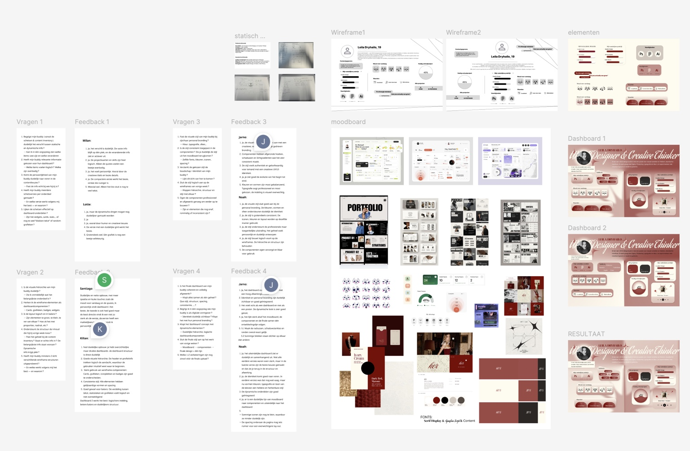
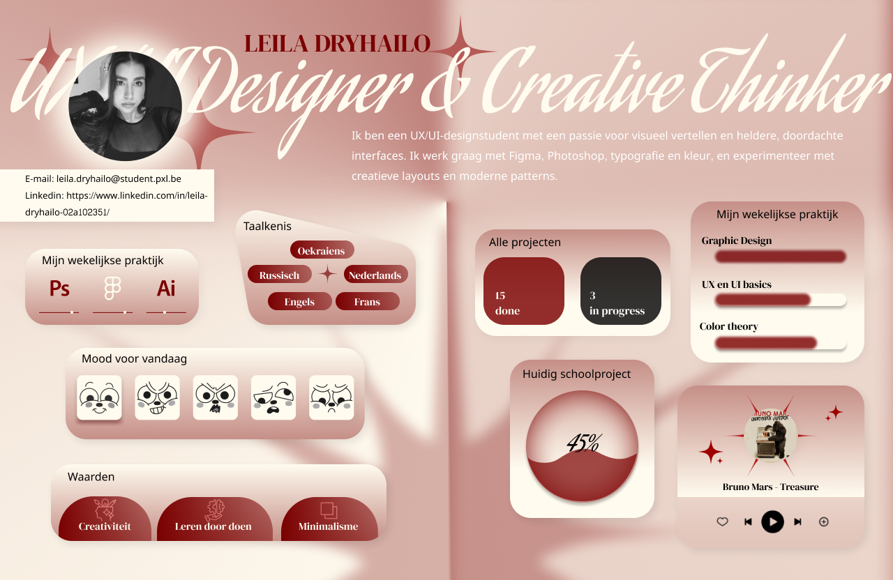

WPL1 / Opdrachten
Dashboard & Portfolio
Tijdens WPL1 werkte ik vooral in Figma: moodboards, wireframes, feedbackrondes en UI-uitwerking. Later bouwde ik mijn portfolio verder in WebStorm om meer controle te hebben over code en responsive design.
1. Dashboard Concept
Dit project is een persoonlijk dashboardconcept dat werd ontwikkeld tijdens Werkplekleren (WPL1). Ik leerde werken met componenten, visuele hiërarchie, moodboards, wireframes en iteratief ontwerpen.

Resultaat

2. Portfolio Project
Voor mijn portfolio werkte ik eerst aan de designs in Figma en bouwde ik alles verder uit in WebStorm. Hier leerde ik layouts opbouwen, responsive design toepassen en mijn werk professioneel presenteren.
Portfolio link:
https://leiladryhailodvoportfolio.netlify.app/
Mijn oude portfolio vind ik persoonlijk minder sterk, maar het hielp me veel leren over structuur en designkeuzes.